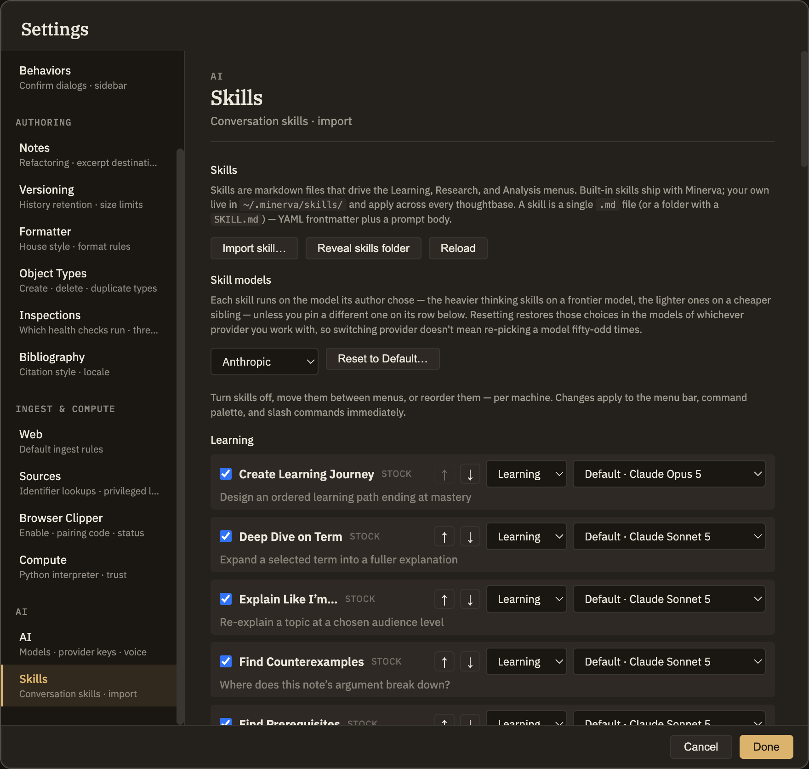

Skills
Skills are the ready-made thinking tools that appear in Minerva's Learning, Research, and Analysis menus. The Skills tab in Settings lets you add your own and choose which AI model each one uses. Turning skills on or off, moving them between menus, and reordering them are covered at Thinking tools → Managing & authoring.
Adding your own skill
Click Add skill… and pick your skill file. Minerva checks that it's a valid, complete skill and adds it to your collection. If something's wrong — a missing detail, or a name that clashes with one you already have — it tells you exactly what to fix right below the button, and nothing is added until the file checks out.
Once a skill is added, it appears right away in its menu, ready to use. Two more buttons sit alongside: Open skills folder opens the place your skills are kept, and Reload refreshes the list after you've edited or dropped in a skill by hand.

Choosing a skill's AI model
Each skill has a model picker. Leave it on the default and the skill uses the model it's meant to run on. Pick a specific model instead to pin that one skill to your choice — handy when you want a heavier model for careful analysis, or a faster one for quick tasks. The default option always names the model it would actually use, so there's no guesswork. Your choices apply everywhere you use Minerva on this computer.
To turn a skill on or off, move it to a different menu, or change its order, see Thinking tools → Managing & authoring.